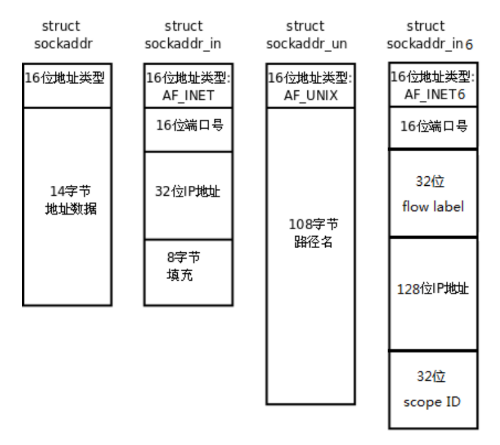

Socket（套接字）是计算机网络编程中用于实现网络通信的一种机制，它提供了一种编程接口，允许应用程序通过网络进行数据传输，实现不同主机之间的通信。Socket 本质是对 TCP/IP 协议的封装，是 TCP/IP 提供给程序员进行网络开发的接口 。
可以将 Socket 理解为不同计算机上应用程序之间进行双向通信的端点。
就好比电话通信中，电话是通信工具，而每个电话接口就是一个 Socket，两台计算机通过各自的 Socket 建立连接来传输数据。
Socket 有多种类型，常见的如： 流套接字（SOCK_STREAM）：也叫 TCP 套接字，提供可靠的、面向连接的、双向的字节流通信服务。数据按顺序发送和接收，不会丢失或重复，适用于对数据完整性要求高的场景，像文件传输、网页浏览等。 数据报套接字（SOCK_DGRAM）：即 UDP 套接字，提供无连接的、不可靠的、基于消息的数据报服务。每个数据报独立传输，可能会出现顺序错乱、重复或丢失的情况，但传输速度快，适合对实时性要求高、能容忍少量数据丢失的场景，比如视频直播、在线游戏等。
文件描述符（File Descriptor）是在 Linux操作系统中内核用于标识和管理进程所打开文件或其他 I/O 资源（如套接字、管道等）的非负整数 。其本质是一个索引值，指向内核为每个进程维护的打开文件记录表。
在进程打开现有文件或创建新文件时，内核会返回一个文件描述符。一般的，头三个数字被内核占用，标准输入（stdin）的文件描述符是 0，标准输出（stdout）是 1，标准错误（stderr）是 2 ，其他打开的文件或资源的文件描述符从 3 开始依次递增。文件描述符的有效范围一般是 0 到OPEN_MAX ，不同系统对此上限的规定有所不同。
除了以前所熟知的用法，比如进程使用open函数打开磁盘上的普通文件时，内核会返回一个普通文件描述符，以供进程对文件进行读写操作外。在网络编程中，还可以使用socket函数创建套接字文件描述符（简称套接字描述符），提供给进程来进行网络通信，如发送和接受数据。
文件描述符在socket 编程中起到以下作用：
网络通信标识：在 socket 编程里，通过
socket函数创建套接字后会返回一个文件描述符，它是该套接字在进程文件描述符表中的索引。凭借这个文件描述符，进程能够对相应套接字进行读写、设置选项等操作 ，实现与其他主机的网络通信。例如使用read函数从套接字文件描述符读取接收到的数据，用write函数向其写入要发送的数据。兼容 I/O 操作：基于文件描述符的 I/O 操作符合 POSIX 标准 。在 UNIX、Linux 的众多系统调用中，很多依赖文件描述符。这使得 socket 编程能与其他基于文件描述符的 I/O 操作统一起来，比如可以像操作普通文件描述符那样，使用
select、poll、epoll等 I/O 多路复用机制来管理多个套接字文件描述符，高效处理网络事件通知，实现同时监听多个网络连接。资源管理依据：文件描述符代表着系统资源，每个进程能打开的文件描述符数量有限。在 socket 编程时，需合理管理套接字文件描述符，及时用
close函数关闭不再使用的套接字，释放资源，防止因过度占用文件描述符导致系统资源耗尽，保障程序稳定运行。
网络环境中通过ip地址可以唯一标识一台主机；如果还要标识主机上的进程，可以加上port。
所以要想在网络环境中识别一个进程，需要使用 ip + port，而传输ip和端口号的过程中需要注意字节序的转换。
Tip
大端：低地址存的是高位，高地址存的是低位。
小端：低地址存的是低位，高地址存的是高位。
网络字节序，就是在网络中进行传输的字节序列，采用的是大端法。
主机字节序，就是本地计算机中存储数据采用的字节序列，大端和小端都有。
下面的四个函数，它们是用于实现主机字节序（host）和网络字节序（net）之间转换的函数。
h代表本机，n代表网络，ip用long型数据表示，port用short数据表示。
xxxxxxxxxx61//h = host, n = network, l = long, s = short3uint32_t htonl(uint32_t hostlong); //将ip从主机字节序转换为网络字节序4uint16_t htons(uint16_t hostshort); //将端口号从主机字节序转换为网络字节序5uint32_t ntohl(uint32_t netlong); //将ip从网络字节序转换为主机字节序6uint16_t ntohs(uint16_t netshort); //将端口号从网络字节序转换为主机字节序IPv4和IPv6的地址格式定义在netinet/in.h中，IPv4地址用sockaddr_in结构体表示，IPv6地址使用sockaddr_in6结构体表示。
UNIX Domain Socket的地址格式定义在sys/un.h中，使用sockaddr_un结构体表示。所有的地址类型分别定义为常数AF_INET、AF_INET6、AF_UNIX。

sockaddr
通用地址表示：是一种通用的套接字地址结构体，用于表示各种类型的套接字地址，能兼容不同协议族（如 IPv4 、IPv6、UNIX 域套接字等 ）。通过指定
sa_family字段来区分地址类型，sa_data字段存储实际的地址数据，其格式和长度随地址族不同而变化。接口适配：在一些 socket 相关函数（如
bind、connect、recvfrom、sendto等 ）中，需要使用该结构体来指明地址信息。不过，由于它缺乏针对特定协议的便利性，实际编程中一般不直接使用，而是使用其变体（如sockaddr_in、sockaddr_in6），这些变体可强制转换为sockaddr类型进行函数调用。xxxxxxxxxx71struct sockaddr2{3// 地址族，用于指定地址的类型，常见取值如 AF_INET 表示 IPv4 地址族，AF_INET6 表示 IPv6 地址族等4sa_family_t sa_family; /* address family, AF_xxx */5// 14 字节的协议地址，具体内容取决于地址族。不同的地址族会使用这 14 个字节来存储不同的地址信息6char sa_data[14]; /* 14 bytes of protocol address */7};sockaddr_in
IPv4 地址与端口表示：专门用于表示 IPv4 地址和端口的结构体，是
sockaddr针对 IPv4 地址的专用形式 。在头文件<netinet/in.h>中定义。数据成员
sin_family：地址族字段，固定为AF_INET，表示使用 IPv4 地址 。
sin_port：用于存储端口号，需使用htons()函数将主机字节序转换为网络字节序（大端序 ） 。
sin_addr：类型为in_addr结构体，用来保存 IPv4 地址 。网络通信应用：在 socket 编程中，使用
sockaddr_in来方便地管理 IPv4 地址和端口号，进行套接字的本地或远程地址指定，实现网络通信基础操作，如服务器绑定地址和监听连接等。xxxxxxxxxx91struct sockaddr_in2{3// 地址族，固定为 AF_INET，表示使用 IPv4 地址族4sa_family_t sin_family; /* address family: AF_INET */5// 端口号，采用网络字节序（大端字节序）存储6in_port_t sin_port; /* port in network byte order */7// 存储 IPv4 地址的结构体8struct in_addr sin_addr; /* internet address */9};in_addr
IPv4 地址存储：用于表示一个 32 位的 IPv4 地址的结构体 ，其中
in_addr_t（一般为 32 位的unsigned int）类型的s_addr成员变量，以网络字节序（大端序 ）存储实际的 IPv4 地址 。地址转换协助：常配合
inet_pton和inet_ntop等函数使用，实现 IPv4 地址在字符串形式和结构体形式之间的转换，方便 IP 地址的存储、处理及传输 。xxxxxxxxxx71/* Internet address. */2struct in_addr3{4// 32 位的 IPv4 地址，采用网络字节序（大端字节序）存储。5// 是一个无符号 32 位整数，用于表示一个 IPv4 地址6uint32_t s_addr; /* address in network byte order */7};sockaddr_storage
xxxxxxxxxx81struct sockaddr_storage {2sa_family_t ss_family; // address family3// all this is padding, implementation specific, ignore it:5char __ss_pad1[_SS_PAD1SIZE];6int64_t __ss_align;7char __ss_pad2[_SS_PAD2SIZE];8};有些函数，比如
accept()，可以接收远端的地址。使用struct sockaddr_storage来接收远端地址，既可以接收 IPv4 的地址，也可以接收 IPv6 的地址（甚至还可以接收本地套接字地址）。
inet_pton()和inet_ntop()，这两个函数可以将 IP 地址在文本形式和二进制形式之间进行转换（p for presentation or printable if you like, n for network）。
inet_pton()：
xxxxxxxxxx51
3int inet_pton(int af, const char *src, void *dst);4
5// Returns: 1 if Ok; 0 if `src` is not a valid address; -1 if `af` is not supported.参数
af: 地址族。AF_INET表示 IPv4 地址，AF_INET6表示 IPv6 地址。
src: 文本形式的 IP 地址。比如“10.12.110.57”，或“2001:db8:63b3:1::3490”。
dst: 二进制形式的 IP 地址要写入的地址，并且是以网络字节序写入的。
xxxxxxxxxx61struct sockaddr_in addr; /* IPv4 */2
3bzero(&addr, sizeof(addr));4addr.sin_family = AF_INET;5addr.sin_port = htons(9527); /* 端口为9527 */6inet_pton(AF_INET, "10.12.110.57", &addr.sin_addr);以前做这种转换的函数是inet_addr()和inet_aton()。不过它们现在已经过时了，并且它们不支持 IPv6。
inet_ntop()可以将 IP 地址从二进制形式转换成文本形式。
xxxxxxxxxx51
3const char *inet_ntop(int af, const void *src, char *dst, socklen_t size);4
5// Returns: `dst` if Ok; `NULL` on failure and errno is set.参数
af: 地址族。AF_INET表示 IPv4 地址，AF_INET6表示 IPv6 地址。
src: 指向二进制的 IP 地址。
dst: 指向一个字符数组，用来存储文本形式的 IP 地址。
size: 字符数组的长度。
xxxxxxxxxx101struct sockaddr_in addr; /* IPv4 */2
3bzero(&addr, sizeof(addr));4addr.sin_family = AF_INET;5addr.sin_port = htons(9527); /* 端口为9527, 注意需要转换为网络字节序 */6inet_pton(AF_INET, "10.12.110.57", &addr.sin_addr);7
8char ipv4[16];9inet_ntop(AF_INET, &addr.sin_addr, ipv4, 16);10puts(ipv4);以前做这种转换的函数是inet_ntoa()。不过现在它已经过时了，并且它不支持 IPv6 。
getaddrinfo()函数会动态申请一些内存空间，并构建一条链表。该链表的结点是一个addrinfo结构体, addrinfo结构体里面包含一个套接字地址。该套接字地址能够匹配node和service，并且满足hints里面设定的限制条件。
xxxxxxxxxx141
5int getaddrinfo(const char *node, // e.g. "www.example.com" or IP6 const char *service, // e.g. "http" or port number7 const struct addrinfo *hints, // restrictions8 struct addrinfo **res); // point to the start of the list9
10// Returns: 0 if OK, nonzero on failure.11
12void freeaddrinfo(struct addrinfo *res);13
14const char *gai_strerror(int errcode);参数
node: 网络上的结点（主机）。可以是域名，如 “www.baidu.com”；也可以是具体的 IP 地址，如 "10.12.110.57"。
service: 网络服务（端口）。可以是服务名，如 “http”；也可以是端口号，如 “9527”。
hints: addrinfo结构体。可以在hints里面设置一些返回结果必须满足的限制条件。
res: 指向链表的第一个结点。
xxxxxxxxxx101struct addrinfo {2 int ai_flags;3 int ai_family;4 int ai_socktype;5 int ai_protocol;6 socklen_t ai_addrlen;7 struct sockaddr *ai_addr;8 char *ai_canonname;9 struct addrinfo *ai_next;10};示例：
服务端:
xxxxxxxxxx1151
10using std::cout;11using std::endl;12
13
16void sighandler(int) {17 int saveErrno = errno;18 while (waitpid(-1, nullptr, WNOHANG) > 0)19 ;20 errno = saveErrno;21}22
23int tcpListen(const char *port) {24 struct addrinfo hints, *result;25 memset(&hints, 0, sizeof(hints));26 hints.ai_family = AF_UNSPEC;27 hints.ai_socktype = SOCK_STREAM;28 hints.ai_flags = AI_PASSIVE;29
30 int status = getaddrinfo(nullptr, port, &hints, &result);31 if (status) {32 fprintf(stderr, "getaddrinfo(): %s", gai_strerror(status));33 return -1;34 }35
36 int sockfd;37 struct addrinfo *p;38 for (p = result; p != nullptr; p = p->ai_next) {39 if ((sockfd = socket(p->ai_family, p->ai_socktype, p->ai_protocol)) == -1) {40 continue;41 }42 int opt = 1;43 if (setsockopt(sockfd, SOL_SOCKET, SO_REUSEPORT, &opt, sizeof(opt)) == -1) {44 close(sockfd);45 continue;46 }47 if (bind(sockfd, p->ai_addr, p->ai_addrlen) == -1) {48 close(sockfd);49 continue;50 }51 if (listen(sockfd, BACKLOG) == -1) {52 close(sockfd);53 continue;54 }55 break;56 }57 return p == nullptr ? -1 : sockfd;58}59
60void *ipaddr(struct sockaddr *addr) {61 if (addr->sa_family == AF_INET) {62 return &((struct sockaddr_in *)addr)->sin_addr;63 } else {64 return &((struct sockaddr_in6 *)addr)->sin6_addr;65 }66}67
68void echo(int connFd, const char *ipStr) {69 char message[BUF_SIZE];70 while (true) {71 memset(message, 0, BUF_SIZE);72 int n = recv(connFd, message, BUF_SIZE, 0);73 if (n < 0) {74 perror("recv(): ");75 return;76 } else if (n == 0) {77 cout << "INFO: " << ipStr << "shutdown\n";78 return;79 } else {80 send(connFd, message, n, 0);81 }82 }83}84
85int main(int argc, char *argv[]) {86 signal(SIGCHLD, sighandler);87
88 const char *port = "12345";89 int listenFd = tcpListen(port);90 if (listenFd == -1) {91 fprintf(stderr, "tcpListen() failed\n");92 exit(1);93 }94 cout << "服务端已启动\n";95
96 while (true) {97 struct sockaddr_storage addr;98 socklen_t len = sizeof(addr);99 int connFd = accept(listenFd, (struct sockaddr *)&addr, &len);100
101 char ipStr[50] = {0};102 inet_ntop(addr.ss_family, ipaddr((struct sockaddr *)&addr), ipStr, 50);103 cout << "INFO: " << ipStr << "connected" << endl;104
105 if (fork() == 0) {106 close(listenFd);107 echo(connFd, ipStr);108 close(connFd);109 exit(0);110 } else {111 close(connFd);112 }113 }114 return 0;115}客户端：
xxxxxxxxxx951
9using std::cin;10using std::cout;11using std::endl;12using std::string;13
14
16int tcpConnect(const char *host, const char *service) {17 // 1. getaddrinfo获取服务器地址信息18 struct addrinfo hints, *result;19 memset(&hints, 0, sizeof(hints));20 hints.ai_family = AF_UNSPEC;21 hints.ai_socktype = SOCK_STREAM;22
23 int err;24 if (err = getaddrinfo(host, service, &hints, &result)) {25 fprintf(stderr, "getaddrinfo(): %s", gai_strerror(err));26 return -1;27 }28 // 2. 遍历地址信息29 int sockfd;30 struct addrinfo *p;31 for (p = result; p != nullptr; p = p->ai_next) {32 // 2.1 socket33 if ((sockfd = socket(p->ai_family, p->ai_socktype, p->ai_protocol)) == -1) {34 continue;35 }36 // 2.2 connect37 if (connect(sockfd, p->ai_addr, p->ai_addrlen) == -1) {38 close(sockfd);39 continue;40 }41 break;42 }43 return p == nullptr ? -1 : sockfd;44}45
46string receive(int sockfd, int recvSize) {47 int left = recvSize;48 char buf[BUF_SIZE];49 string result;50 while (left > 0) {51 memset(buf, 0, BUF_SIZE);52 int n = recv(sockfd, buf, BUF_SIZE, 0);53 if (n == -1) {54 cout << "接收失败\n";55 return "";56 } else if (n == 0) {57 cout << "服务端关闭连接\n";58 return "";59 }60 result += buf;61 left -= n;62 }63 return result;64}65
66int main(int argc, char *argv[]) {67 int sockfd = tcpConnect("127.0.0.1", "12345");68 if (sockfd == -1) {69 cout << "连接失败\n";70 } else {71 cout << "连接成功\n";72 }73
74 string toBeSent;75 while (true) {76 cout << "输入内容: ";77 while (std::getline(cin, toBeSent)) {78 if (send(sockfd, toBeSent.c_str(), toBeSent.size(), 0) == -1) {79 cout << "发送失败\n";80 close(sockfd);81 exit(1);82 }83 string received = receive(sockfd, toBeSent.size());84 if (received.empty()) {85 close(sockfd);86 exit(1);87 }88 cout << received << endl;89 }90 break;91 }92
93 close(sockfd);94 return 0;95}调用socket函数创建一个socket通信端点
xxxxxxxxxx41/* See NOTES */2
4int socket(int domain, int type, int protocol);domain：协议域，指定使用的协议族，如AF_INET(IPv4)、AF_INET6(IPV6)
type：指定 socket 类型，常见的有SOCK_STREAM（TCP）、SOCK_DGRAM（UDP）
protocol：指定协议，如IPPROTO_TCP (TCP)、IPPTOTO_UDP (UDP)，一般将protocol设为0，系统会自动选择type类型对应的默认协议。
函数返回值：成功就返回一个非负整数，指向新创建的socket的文件描述符，失败则返回-1
将套接字与特定的 IP 地址和端口号绑定，使得该套接字可以在指定的地址和端口上接收连接或发送数据。
bind函数将sockfd与addr绑定在一起，使sockfd这个用于网络通信的文件描述符监听addr所描述的地址和端口号。
xxxxxxxxxx41/* See NOTES */2
4int bind(int sockfd, const struct sockaddr *addr, socklen_t addrlen);sockfd：socket函数创建的套接字描述符
addr：指向要绑定的ip地址与端口号的sockaddr结构体的指针
addrlen:前一个参数addr结构体的长度
函数返回值：成功就返回0，失败返回-1，并设置 errno 指示错误，常见错误如 EADDRINUSE 表示地址已被使用。
Note
客户端也可以bind端口号与IP地址，如果没有显式绑定的话，操作系统会自动分配一个IP地址与端口号。但是服务器是不能不使用bind函数，让操作系统随机分配IP地址与端口号，因为这样的话客户端就不知道服务器的IP地址与端口号，就不知道怎么连接到服务器上了，也不知道连接到哪个服务器上。
将一个套接字设置为监听状态，准备接受客户端的连接请求。
xxxxxxxxxx41/* See NOTES */2
4int listen(int sockfd, int backlog);sockfd：socket函数创建的套接字描述符
backlog：指定允许的最大全连接队列长度。
函数返回值：成功返回0，失败返回-1，并设置 errno 指示错误，例如 EINVAL 表示套接字不是一个有效的监听套接字。
一旦启用了listen之后，操作系统就知道该套接字是服务端的套接字，操作系统内核就不再启用其发送和接收缓冲区(回收空间)，转而在内核区维护两个队列结构： 半连接队列和全连接队列。
半连接队列（SYN Queue）用于管理成功第一次握手的连接；
全连接队列（Accept Queue）用于管理已经完成三次握手的连接。
使用accept函数从服务端的socket通信端点的全连接队列中取出一个连接，并创建一个新的套接字用于与客户端进行通信。
xxxxxxxxxx41/* See NOTES */2
4int accept(int sockfd, struct sockaddr *addr, socklen_t *addrlen);sockfd：监听状态的套接字描述符
addr：指向用于存储客户端地址信息（包含IP地址与端口号）的 sockaddr结构体指针
addrlen：指向 addr结构体长度的指针
函数返回值：成功返回一个新的socket文件描述符，用于和客户端通信，失败返回-1，并设置 errno 指示错误，如 ECONNABORTED 表示连接被中断。
Tip
后两位参数如果传入空指针，意味着服务端程序不关心发起连接的客户端的地址信息。
当服务端只关注数据传输本身，不在意连接来源时，可以不用获取客户端的地址信息了。如果是服务端需要分析客户端的网络位置去排查问题，或进行某些访问控制时，则必须获取到客户端的地址信息。
客户端调用该函数，尝试与服务器建立连接
xxxxxxxxxx41/* See NOTES */2
4int connect(int sockfd, const struct sockaddr *addr, socklen_t addrlen);sockfd：是客户端自己调用socket函数创建的套接字描述符
addr：指向服务器地址信息（包含IP地址与端口号）的 sockaddr 结构体指针
addrlen：传入sizeof(addr)大小
函数返回值：成功返回0，表示连接建立成功，失败返回-1，并设置 errno 指示错误，例如 ECONNREFUSED 表示服务器拒绝连接。
在已连接的socket通信端点上发生数据
xxxxxxxxxx21ssize_t send(int sockfd, const void *buf, size_t len, int flags);sockfd：要发送数据的套接字描述符
buf：指向要发送数据的缓冲区指针
len：要发送数据的字节数
flags：控制发送行为的标志，通常设为 0。
函数返回值：成功时返回实际发送的字节数，可能小于 len。失败时返回 -1，并设置 errno指示错误，如EPIPE表示连接已断开。
从已连接的socket通信端点上接收数据
xxxxxxxxxx21ssize_t recv(int sockfd, void *buf, size_t len, int flags);sockfd：要接收数据的套接字描述符
buf：指向用于存储接收数据的缓冲区指针
len：缓冲区的最大长度
flags：控制接收行为的标志，通常设为 0
函数返回值：成功时返回实际接收的字节数；如果对端关闭连接，返回 0；失败时返回 -1，并设置 errno 指示错误，如ECONNRESET 表示连接被重置。
关闭socket通信端点，释放相关资源，终止网络连接
xxxxxxxxxx21int close(int fd);fd：要关闭的套接字描述符
函数返回值：成功时返回 0；失败时返回 -1，并设置 errno 指示错误。如 EBADF表示文件描述符参数无效。
服务器：socket、bind、listen、accept、close
客户端：socket、connect、close
客户端和服务器各自执行socket方法，得到代表连接的文件描述符。然后服务器依次执行bind、listen、accept方法，然后等待客户端执行connect方法（发起建立连接的请求）。连接建立后，客户端可以执行send方法发送消息，服务器执行recv接受消息。或者服务器执行send发送消息，客户端执行recv接收消息。
write 和 read 函数不仅适用于 socket 编程，还可用于普通文件等其他文件描述符相关的 I/O 操作；
send 和 recv 主要用于 socket 编程，更侧重于网络数据的收发，与网络协议结合更紧密。相较于write 和 read 函数，还多了一个标志位参数，能够更灵活地控制读写操作。
服务端代码
xxxxxxxxxx881
8using namespace std;9
10int main() {11 // 创建socket12 int server_fd = socket(AF_INET, SOCK_STREAM, 0);13 if (server_fd == -1) {14 perror("socket创建失败");15 return -1;16 }17 18 // 设置地址重用19 int opt = 1;20 if (setsockopt(server_fd, SOL_SOCKET, SO_REUSEADDR, &opt, sizeof(opt)) < 0) {21 perror("setsockopt失败");22 close(server_fd);23 return -1;24 }25 26 // 绑定地址和端口27 struct sockaddr_in server_addr;28 server_addr.sin_family = AF_INET;29 server_addr.sin_addr.s_addr = INADDR_ANY;30 server_addr.sin_port = htons(8080);31 32 if (bind(server_fd, (struct sockaddr*)&server_addr, sizeof(server_addr)) < 0) {33 perror("bind失败");34 close(server_fd);35 return -1;36 }37 38 // 监听连接39 if (listen(server_fd, 5) < 0) {40 perror("listen失败");41 close(server_fd);42 return -1;43 }44 45 cout << "服务器启动，监听端口8080..." << endl;46 47 // 接受客户端连接48 struct sockaddr_in client_addr;49 socklen_t client_len = sizeof(client_addr);50 int client_fd = accept(server_fd, (struct sockaddr*)&client_addr, &client_len);51 52 if (client_fd < 0) {53 perror("accept失败");54 close(server_fd);55 return -1;56 }57 58 cout << "客户端连接成功: " << inet_ntoa(client_addr.sin_addr) << ":" << ntohs(client_addr.sin_port) << endl;59 60 // 接收和发送数据61 char buffer[1024] = {0};62 while (true) {63 memset(buffer, 0, sizeof(buffer));64 int bytes_received = recv(client_fd, buffer, sizeof(buffer) - 1, 0);65 66 if (bytes_received <= 0) {67 cout << "客户端断开连接" << endl;68 break;69 }70 71 cout << "收到消息: " << buffer << endl;72 73 // 回复客户端74 string response = "服务器收到: " + string(buffer);75 send(client_fd, response.c_str(), response.length(), 0);76 77 // 如果收到"quit"则退出78 if (string(buffer) == "quit") {79 break;80 }81 }82 83 // 关闭连接84 close(client_fd);85 close(server_fd);86 87 return 0;88}客户端
xxxxxxxxxx681
8using namespace std;9
10int main() {11 // 创建socket12 int client_fd = socket(AF_INET, SOCK_STREAM, 0);13 if (client_fd == -1) {14 perror("socket创建失败");15 return -1;16 }17 18 // 设置服务器地址19 struct sockaddr_in server_addr;20 server_addr.sin_family = AF_INET;21 server_addr.sin_port = htons(8080);22 23 // 将IP地址从字符串转换为网络地址24 if (inet_pton(AF_INET, "127.0.0.1", &server_addr.sin_addr) <= 0) {25 perror("IP地址转换失败");26 close(client_fd);27 return -1;28 }29 30 // 连接服务器31 if (connect(client_fd, (struct sockaddr*)&server_addr, sizeof(server_addr)) < 0) {32 perror("连接服务器失败");33 close(client_fd);34 return -1;35 }36 37 cout << "成功连接到服务器!" << endl;38 cout << "输入消息发送给服务器 (输入'quit'退出):" << endl;39 40 string message;41 char buffer[1024] = {0};42 43 while (true) {44 cout << "请输入: ";45 getline(cin, message);46 47 // 发送消息48 send(client_fd, message.c_str(), message.length(), 0);49 50 if (message == "quit") {51 break;52 }53 54 // 接收服务器回复55 memset(buffer, 0, sizeof(buffer));56 int bytes_received = recv(client_fd, buffer, sizeof(buffer) - 1, 0);57 58 if (bytes_received > 0) {59 cout << "服务器回复: " << buffer << endl;60 }61 }62 63 // 关闭连接64 close(client_fd);65 cout << "连接已关闭" << endl;66 67 return 0;68}Tip
地址复用与端口复用
地址复用允许通信端点绑定到同一个 IP + 端口 ，即使仍处于 TIME_WAIT 状态（即前一个连接刚刚关闭，但还未完全释放）。可以迅速进行重复使用，不至于等待2MSL的时间。
目前实现的效果是，一个服务器只能跟一个客户端进行连接。如果想要用一个服务器进程同时监听多个客户端，就要用到IO多路复用。
IO多路复用（I/O Multiplexing）是一种高效的网络编程技术，允许单个线程同时监控多个文件描述符（socket），当其中任何一个准备好进行IO操作时，系统会通知应用程序。
传统IO模型的问题：
阻塞IO：一个线程只能处理一个连接，需要等待IO完成
多线程：为每个连接创建线程，资源消耗大，上下文切换开销高
IO多路复用的优势：
单线程管理多个连接
避免线程创建和切换的开销
提高系统并发处理能力
原理：
应用程序通过系统调用（如 select、poll、epoll 等）向内核注册需要监听的文件描述符以及感兴趣的事件（如读事件、写事件）。
内核会不断地检查这些文件描述符的状态，当有事件发生时，内核会通知应用程序。
应用程序接收到通知后，就可以对发生事件的文件描述符进行相应的 IO 操作。
select的基本原理, 就是把要监视的文件描述符, 构建一个文件描述符监听集合; 这个集合交给select, select促使操作系统内核, 通过轮询的方式监听这个文件描述符集合。直到监听集合中, 至少有一个文件按照条件就绪(条件:预设的监听是读就绪OR写就绪), 这一次的select监听宣告结束, 并携带就绪的文件描述符集合返回, 继续执行用户的代码逻辑。
虽然应用进程需要遍历文件描述符集合来确定哪些就绪。但这个 “遍历” 是在 内核通知就绪之后 进行的，属于 被动检查，而非应用进程主动轮询硬件设备。
xxxxxxxxxx61
6int select(int nfds, fd_set *readfds, fd_set *writefds, fd_set *exceptfds,struct timeval * timeout);select函数参数
nfds:监控的文件描述符集里最大文件描述符+1，因为此参数会告诉内核检测前多少个文件描述符的状态(文件描述符0/1/2/3...)
fd_set：本质是个位图。能够监听的文件描述符的个数上限是1024，如果全都用int保存，需要4096个字节的空间。实际上只需要用一位就可以保存关键信息，0代表不监听，1代表监听，这样以来只需要1024位，也就是128个字节的空间。
第二参数实际是指向位图的指针，对某个文件描述符进行监听，只需要将相应的位设为1就可以了。
readfs/writes/exceptfds:监控有读数据/写数据/异常发生到达文件描述符集合，三个都是传入传出参数。
平时大多数情况下没有监听写事件或者异常事件，所以第三、四个参数一般直接传空指针。
timeout:定时阻塞监控时间
3种情况： 1、NULL，永远等下去，一直阻塞直到所监听的文件描述符集合中有一个或多个文件描述符发生相应事件 2、传入非零的struct timeval结构体指针，等待固定时间 3、传入struct timeval结构体指针，但设置timeval里时间均为0，select函数不会阻塞，而是立即返回，一般放在循环中实现轮询。
xxxxxxxxxx41struct timeval {2 long tv_sec; /* seconds */3 long tv_usec; /* microseconds */4};通过这个监听集合，可以实现对多个socket的同时监听。
当监听集合完成一次遍历，发现有套接字处于就绪状态，也就是某些套接字的缓冲区中有数据需要处理时，就会返回一个就绪码（处于就绪状态的套接字数量），并通过传入传出参数传出一个就绪集合（就绪的套接字的位码置1，未就绪的套接字的位码置0）
select函数返回值 成功：所监听的所有的监听集合中，满足条件的总数 —— 就绪的文件描述符个数。 失败：返回-1。
Tip
位图可以通过下标访问，为什么不直接进行随机访问呢？
select 使用的位图（fd_set）虽然可以通过下标访问，但它本身没有记录哪些文件描述符处于就绪状态的额外信息。当 select 函数返回后，操作系统只是修改了位图中对应就绪文件描述符的位为 1，但没有直接标记出具体哪些位发生了变化，也就是不知道就绪的下标。所以只能通过遍历位图，用 FD_ISSET 宏函数逐个检查文件描述符对应的位是否为 1 ，才能确定哪些文件描述符就绪。
相关的宏
xxxxxxxxxx41void FD_ZERO(fd_set *set);//将位图中所有的位清空为02void FD_SET(int fd, fd_set *set);//将文件描述符fd设置到位图中3void FD_CLR(int fd, fd_set *set);//将文件描述符fd从位图中清除4int FD_ISSET(int fd, fd_set *set);//判断fd是否在位图中，如果在说明就绪了，否则说明没有就绪Tip
INADDR_ANY 是一个特殊的 IPv4 地址表示，值为 0.0.0.0 ，代表不确定地址
泛指本机的意思，表示本机的所有IP，因为有些电脑不止一块网卡，如果某个应用程序只监听某个端口，那么其他端口过来的数据就接收不了。
xxxxxxxxxx1531
11using namespace std;12
13const int MAX_CLIENTS = 30;14const int PORT = 8080;15const int BUFFER_SIZE = 1024;16
17int main() {18 int master_socket, new_socket, client_sockets[MAX_CLIENTS];19 struct sockaddr_in address;20 int opt = 1;21 int addrlen = sizeof(address);22 char buffer[BUFFER_SIZE];23 fd_set readfds;24 int max_sd, sd, activity;25 26 // 初始化客户端socket数组27 for (int i = 0; i < MAX_CLIENTS; i++) {28 client_sockets[i] = 0;29 }30 31 // 创建主socket32 if ((master_socket = socket(AF_INET, SOCK_STREAM, 0)) == 0) {33 perror("socket创建失败");34 exit(EXIT_FAILURE);35 }36 37 // 设置socket选项，允许地址重用38 if (setsockopt(master_socket, SOL_SOCKET, SO_REUSEADDR, (char *)&opt, sizeof(opt)) < 0) {39 perror("setsockopt失败");40 exit(EXIT_FAILURE);41 }42 43 // 配置地址结构44 address.sin_family = AF_INET;45 address.sin_addr.s_addr = INADDR_ANY;46 address.sin_port = htons(PORT);47 48 // 绑定socket到端口49 if (bind(master_socket, (struct sockaddr *)&address, sizeof(address)) < 0) {50 perror("bind失败");51 exit(EXIT_FAILURE);52 }53 54 cout << "监听端口 " << PORT << endl;55 56 // 开始监听，最多3个等待连接57 if (listen(master_socket, 3) < 0) {58 perror("listen失败");59 exit(EXIT_FAILURE);60 }61 62 cout << "等待连接..." << endl;63 64 while (true) {65 // 清空socket集合66 FD_ZERO(&readfds);67 68 // 添加主socket到集合69 FD_SET(master_socket, &readfds);70 max_sd = master_socket;71 72 // 添加子socket到集合73 for (int i = 0; i < MAX_CLIENTS; i++) {74 sd = client_sockets[i];75 76 // 如果socket描述符有效，则添加到读取列表77 if (sd > 0) {78 FD_SET(sd, &readfds);79 }80 81 // 记录最大的socket描述符号码82 if (sd > max_sd) {83 max_sd = sd;84 }85 }86 87 // 等待某个socket上的活动，超时为NULL（无限等待）88 activity = select(max_sd + 1, &readfds, NULL, NULL, NULL);89 90 if ((activity < 0) && (errno != EINTR)) {91 cout << "select错误" << endl;92 }93 94 // 如果主socket有活动，说明有新的连接请求95 if (FD_ISSET(master_socket, &readfds)) {96 if ((new_socket = accept(master_socket, (struct sockaddr *)&address, (socklen_t*)&addrlen)) < 0) {97 perror("accept失败");98 exit(EXIT_FAILURE);99 }100 101 // 显示新连接的信息102 cout << "新连接, socket fd: " << new_socket 103 << ", ip: " << inet_ntoa(address.sin_addr) 104 << ", port: " << ntohs(address.sin_port) << endl;105 106 // 发送欢迎消息107 string message = "欢迎连接到服务器\n";108 if (send(new_socket, message.c_str(), message.length(), 0) != message.length()) {109 perror("send失败");110 }111 112 cout << "欢迎消息已发送" << endl;113 114 // 将新socket添加到客户端数组115 for (int i = 0; i < MAX_CLIENTS; i++) {116 if (client_sockets[i] == 0) {117 client_sockets[i] = new_socket;118 cout << "添加到客户端列表，位置: " << i << endl;119 break;120 }121 }122 }123 124 // 检查其他socket的IO操作125 for (int i = 0; i < MAX_CLIENTS; i++) {126 sd = client_sockets[i];127 128 if (FD_ISSET(sd, &readfds)) {129 // 检查是否为关闭连接130 int valread = read(sd, buffer, BUFFER_SIZE);131 if (valread == 0) {132 // 客户端断开连接133 getpeername(sd, (struct sockaddr*)&address, (socklen_t*)&addrlen);134 cout << "客户端断开连接, ip: " << inet_ntoa(address.sin_addr) 135 << ", port: " << ntohs(address.sin_port) << endl;136 137 // 关闭socket并标记为0，以便重用138 close(sd);139 client_sockets[i] = 0;140 } else {141 // 回显收到的消息给客户端142 buffer[valread] = '\0';143 cout << "收到消息: " << buffer << endl;144 145 string response = "服务器收到: " + string(buffer);146 send(sd, response.c_str(), response.length(), 0);147 }148 }149 }150 }151 152 return 0;153}Poll允许程序同时监控多个文件描述符，当其中任何一个准备好进行IO操作时，poll会返回并告知哪些文件描述符已经就绪。
系统调用流程
准备阶段: 应用程序创建pollfd数组，设置要监控的文件描述符和事件类型
系统调用: 调用poll()函数，将控制权交给内核
内核处理: 内核检查所有指定的文件描述符状态
阻塞等待: 如果没有事件就绪，进程进入睡眠状态
事件唤醒: 当有事件发生时，内核唤醒进程
返回结果: poll()返回，revents字段被设置为实际发生的事件
内核实现机制
文件描述符管理:
内核为每个文件描述符维护一个等待队列
当调用poll时，内核将当前进程加入到相关文件描述符的等待队列中
事件检测:
内核遍历pollfd数组中的每个文件描述符
检查每个fd的当前状态是否满足events中指定的条件
如果满足条件，设置对应的revents位
唤醒机制:
当设备驱动或网络协议栈有数据到达时，会唤醒等待队列中的进程
进程被唤醒后，poll()函数返回就绪的文件描述符数量
相比Select的优势
没有文件描述符数量限制
Select: 受FD_SETSIZE限制，通常为1024
Poll: 只受系统内存限制，可以监控更多文件描述符
更高效的数据结构
Select: 使用位图（fd_set），需要遍历整个位图
Poll: 使用结构体数组，只处理实际的文件描述符
更清晰的事件处理
Select: 需要重新设置fd_set，事件类型有限
Poll: events和revents分离，支持更多事件类型
更好的可移植性
Select: 在不同系统上行为可能不一致
Poll: POSIX标准，跨平台一致性更好
xxxxxxxxxx81int poll(struct pollfd *fds, nfds_t nfds, int timeout);3
4struct pollfd {5 int fd; /* file descriptor */6 short events; /* requested events */ // POLLIN/POLLOUT/POLLERR7 short revents; /* returned events */ // 返回结果8};fds:文件描述符数组。
events：POLLIN/POLLOUT/POLLERR 对应读事件、写事件、异常事件
nfds：监控数组中有多少文件描述符需要被监控。
timeout 毫秒级等待
-1:阻塞等，#define INFTIM -1 Linux中没有定义此宏
0:立即返回，不阻塞进程
>0:等待指定毫秒数，如当前系统时间精度不够毫秒，向上取值。
函数返回值：满足监听条件的文件描述符的数目。
xxxxxxxxxx1561
11using namespace std;12
13const int PORT = 8080;14const int BUFFER_SIZE = 1024;15const int MAX_CLIENTS = 100;16
17int main() {18 int server_fd, new_socket;19 struct sockaddr_in address;20 int opt = 1;21 int addrlen = sizeof(address);22 char buffer[BUFFER_SIZE];23 24 // 使用vector来管理pollfd结构体25 vector<struct pollfd> poll_fds;26 27 // 创建服务器socket28 if ((server_fd = socket(AF_INET, SOCK_STREAM, 0)) == 0) {29 perror("socket创建失败");30 exit(EXIT_FAILURE);31 }32 33 // 设置socket选项34 if (setsockopt(server_fd, SOL_SOCKET, SO_REUSEADDR, &opt, sizeof(opt))) {35 perror("setsockopt失败");36 exit(EXIT_FAILURE);37 }38 39 // 配置地址结构40 address.sin_family = AF_INET;41 address.sin_addr.s_addr = INADDR_ANY;42 address.sin_port = htons(PORT);43 44 // 绑定socket45 if (bind(server_fd, (struct sockaddr *)&address, sizeof(address)) < 0) {46 perror("bind失败");47 exit(EXIT_FAILURE);48 }49 50 // 开始监听51 if (listen(server_fd, 3) < 0) {52 perror("listen失败");53 exit(EXIT_FAILURE);54 }55 56 cout << "Poll服务器启动，监听端口 " << PORT << endl;57 58 // 将服务器socket添加到poll数组59 struct pollfd server_pollfd;60 server_pollfd.fd = server_fd;61 server_pollfd.events = POLLIN; // 监听可读事件62 server_pollfd.revents = 0;63 poll_fds.push_back(server_pollfd);64 65 while (true) {66 // 调用poll等待事件67 int poll_count = poll(poll_fds.data(), poll_fds.size(), -1);68 69 if (poll_count < 0) {70 perror("poll失败");71 break;72 }73 74 // 遍历所有文件描述符75 for (size_t i = 0; i < poll_fds.size(); i++) {76 // 检查是否有事件发生77 if (poll_fds[i].revents & POLLIN) {78 79 if (poll_fds[i].fd == server_fd) {80 // 服务器socket有新连接81 new_socket = accept(server_fd, (struct sockaddr *)&address, (socklen_t*)&addrlen);82 83 if (new_socket < 0) {84 perror("accept失败");85 continue;86 }87 88 cout << "新连接: socket fd = " << new_socket 89 << ", ip = " << inet_ntoa(address.sin_addr) 90 << ", port = " << ntohs(address.sin_port) << endl;91 92 // 发送欢迎消息93 string welcome = "欢迎连接到Poll服务器!\n";94 send(new_socket, welcome.c_str(), welcome.length(), 0);95 96 // 将新socket添加到poll数组97 struct pollfd client_pollfd;98 client_pollfd.fd = new_socket;99 client_pollfd.events = POLLIN;100 client_pollfd.revents = 0;101 poll_fds.push_back(client_pollfd);102 103 cout << "客户端已添加到poll列表，当前连接数: " << poll_fds.size() - 1 << endl;104 105 } else {106 // 客户端socket有数据107 int client_fd = poll_fds[i].fd;108 memset(buffer, 0, BUFFER_SIZE);109 110 int bytes_read = recv(client_fd, buffer, BUFFER_SIZE - 1, 0);111 112 if (bytes_read <= 0) {113 // 客户端断开连接114 if (bytes_read == 0) {115 cout << "客户端 " << client_fd << " 断开连接" << endl;116 } else {117 perror("recv失败");118 }119 120 close(client_fd);121 122 // 从poll数组中移除123 poll_fds.erase(poll_fds.begin() + i);124 i--; // 调整索引125 126 cout << "当前连接数: " << poll_fds.size() - 1 << endl;127 128 } else {129 // 处理接收到的数据130 buffer[bytes_read] = '\0';131 cout << "收到客户端 " << client_fd << " 消息: " << buffer << endl;132 133 // 回显消息134 string response = "服务器收到: " + string(buffer);135 send(client_fd, response.c_str(), response.length(), 0);136 }137 }138 }139 140 // 检查错误事件141 if (poll_fds[i].revents & (POLLERR | POLLHUP | POLLNVAL)) {142 cout << "socket " << poll_fds[i].fd << " 发生错误" << endl;143 close(poll_fds[i].fd);144 poll_fds.erase(poll_fds.begin() + i);145 i--;146 }147 }148 }149 150 // 清理资源151 for (auto& pfd : poll_fds) {152 close(pfd.fd);153 }154 155 return 0;156}epoll是Linux下IO多路复用接口select/poll的增强版本，能显著提高程序在大量并发连接中只有少量活跃的情况下的系统CPU利用率，因为它会复用文件描述符集合来传递结果而不是迫使开发者每次等待事件之前都必须重新准备要侦听的文件描述符集合，另一个原因是获取事件的时候，它无须遍历整个被侦听的描述符集，只要遍历哪些被内核IO事件唤醒而加入就绪集合的描述符集合就行了。
epoll_create 函数
创建一个 epoll 实例，返回一个文件描述符，后续的 epoll_ctl 和 epoll_wait 函数将使用这个文件描述符来操作和等待事件。
参数: size：在早期的 epoll 实现中，该参数用于告知内核要监听的文件描述符的大致数量，帮助内核提前分配所需的内存。但从 Linux 2.6.8 开始，这个参数被忽略了，不过为了兼容性，仍需传入一个大于 0 的值。
返回值: 成功时，返回一个非负的 epoll 实例的文件描述符。失败时，返回 -1，并设置 errno 来指示错误类型。
xxxxxxxxxx41int epoll_create(int size); // 随便传一个大于0的值3// size：参数size用来告知内核监听的文件描述符的个数，与内存大小有关。4// 返回值：文件描述符epoll_ctl 函数 对 epoll 实例所监听的文件描述符进行控制操作，包括注册、修改和删除监听的事件。
参数:
epfd：epoll_create 函数返回的 epoll 实例的文件描述符，用于指定要操作的 epoll 实例。
op：指定要执行的操作类型，有以下三种取值： EPOLL_CTL_ADD：将指定的文件描述符 fd 添加到 epoll 实例中，并监听其指定的事件。 EPOLL_CTL_MOD：修改已经添加到 epoll 实例中的文件描述符 fd 所监听的事件。 EPOLL_CTL_DEL：将指定的文件描述符 fd 从 epoll 实例中删除，不再监听其事件。
fd：要操作的文件描述符，通常是一个套接字描述符或其他可监听的文件描述符。
event：指向 struct epoll_event 结构体的指针，用于指定要监听的事件类型和相关的数据。
在内核中，每个 fd对应的驱动对象会注册一个 就绪回调函数。
回调函数的作用：当 fd 状态变化（如 socket 接收缓冲区有数据），驱动会触发该回调函数，通知 epoll 内核模块。
返回值: 成功时，返回 0。失败时，返回 -1，并设置 errno 来指示错误类型。
xxxxxxxxxx181// 控制某个epoll监控的文件描述符上的事件：注册、修改、删除2int epoll_ctl(int epfd, int op, int fd, struct epoll_event *event);3// epfd：epoll_create函数返回值4// op：EPOLL_CTL_ADD/EPOLL_CTL_MOD/EPOLL_CTL_DEL 添加/修改/删除文件描述符 背后是红黑树5// fd：将哪个文件描述符以op的方式加在以epfd建立的树上6// event：告诉内核需要监听的事情。7
8struct epoll_event {9 uint32_t events; // EPOLLIN/EPOLLOUT/EPOLLERR10 epoll_data_t data;11};12
13typedef union epoll_data {14 void *ptr;15 int fd; // 存储对应的文件描述符，方便在事件处理时直接使用 —— 对应epoll_ctl函数的第三个参数16 uint32_t u32;17 uint64_t u64;18} epoll_data_t;epoll_wait 函数 等待 epoll 实例中所监听的文件描述符上有事件发生。当有事件发生时，将这些事件信息复制到 events 数组中。
参数
epfd：epoll_create 函数返回的 epoll 实例的文件描述符，用于指定要等待事件的 epoll 实例。
events：指向 struct epoll_event 结构体的指针，用于存储发生事件的文件描述符的相关信息。相当于将就绪的文件描述符构成一个就绪列表。
maxevents：指定 events 数组的最大元素个数，即最多能返回多少个事件。可以将就绪的文件描述符个数直接传入。
timeout：指定等待事件发生的超时时间，单位为毫秒。有以下几种取值情况： -1：表示无限等待，直到有事件发生才返回。 0：表示立即返回，无论是否有事件发生。 大于 0 的值：表示等待指定的毫秒数，如果在这段时间内有事件发生则返回，否则超时返回。
返回值 成功时，返回发生事件的文件描述符的数量；超时返回时，返回 0；失败时，返回 -1，并设置 errno 来指示错误类型。
xxxxxxxxxx91// 等待所监控文件描述符上有事件的产生2int epoll_wait(int epfd, struct epoll_event *events, int maxevents, int timeout);3// events：用来存内核得到事件的集合（这里是个传出参数）4// maxevents：告知内核这个events有多大5// timeout：是超时时间6//-1：阻塞7//=0：立即返回，非阻塞8//>0：指定毫秒9// 返回值：成功返回有多少文件描述符就绪，时间到时返回0，出错返回-1用户通过
epoll_ctl注册 FD 时：
内核将 FD 添加到红黑树中，并为其关联一个 事件结构体（epitem），记录关注的事件类型。
在内核中，每个 FD 对应的驱动对象会注册一个 就绪回调函数。
回调函数的作用：当 FD 状态变化（如 socket 接收缓冲区有数据），驱动会触发该回调函数，通知 epoll 内核模块。
当用户调用
epoll_wait时，内核进入阻塞状态：
对于每个注册的 FD，其对应的内核驱动（如网络设备驱动）会在 数据就绪时自动触发回调函数。
回调函数执行逻辑：
（1）检查该 FD 的事件是否满足注册时的条件（如可读事件是否发生）。
（2）若满足，将该 FD 及其事件类型添加到 就绪列表 中，并唤醒
epoll_wait调用。
核心特点：
内核无需主动遍历红黑树，而是通过驱动的回调函数被动接收就绪事件，并将其存入就绪列表。
epoll_wait的时间复杂度仅与就绪事件的数量 (M) 相关（(O(M))），而非总 FD 数 (N)。
xxxxxxxxxx2081
13using namespace std;14
15const int PORT = 8080;16const int BUFFER_SIZE = 1024;17const int MAX_EVENTS = 1000;18const int MAX_CLIENTS = 10000;19
20// 设置文件描述符为非阻塞模式21int set_nonblocking(int fd) {22 int flags = fcntl(fd, F_GETFL, 0);23 if (flags == -1) {24 perror("fcntl F_GETFL");25 return -1;26 }27 28 flags |= O_NONBLOCK;29 if (fcntl(fd, F_SETFL, flags) == -1) {30 perror("fcntl F_SETFL");31 return -1;32 }33 34 return 0;35}36
37int main() {38 int server_fd, epoll_fd;39 struct sockaddr_in address;40 struct epoll_event event, events[MAX_EVENTS];41 int opt = 1;42 43 // 创建服务器socket44 if ((server_fd = socket(AF_INET, SOCK_STREAM, 0)) == 0) {45 perror("socket创建失败");46 exit(EXIT_FAILURE);47 }48 49 // 设置socket选项50 if (setsockopt(server_fd, SOL_SOCKET, SO_REUSEADDR, &opt, sizeof(opt))) {51 perror("setsockopt失败");52 exit(EXIT_FAILURE);53 }54 55 // 设置为非阻塞模式56 if (set_nonblocking(server_fd) == -1) {57 exit(EXIT_FAILURE);58 }59 60 // 配置地址结构61 address.sin_family = AF_INET;62 address.sin_addr.s_addr = INADDR_ANY;63 address.sin_port = htons(PORT);64 65 // 绑定socket66 if (bind(server_fd, (struct sockaddr *)&address, sizeof(address)) < 0) {67 perror("bind失败");68 exit(EXIT_FAILURE);69 }70 71 // 开始监听72 if (listen(server_fd, SOMAXCONN) < 0) {73 perror("listen失败");74 exit(EXIT_FAILURE);75 }76 77 // 创建epoll实例78 epoll_fd = epoll_create1(EPOLL_CLOEXEC);79 if (epoll_fd == -1) {80 perror("epoll_create1失败");81 exit(EXIT_FAILURE);82 }83 84 // 将服务器socket添加到epoll85 event.events = EPOLLIN | EPOLLET; // 边缘触发模式86 event.data.fd = server_fd;87 if (epoll_ctl(epoll_fd, EPOLL_CTL_ADD, server_fd, &event) == -1) {88 perror("epoll_ctl: server_fd");89 exit(EXIT_FAILURE);90 }91 92 cout << "Epoll服务器启动，监听端口 " << PORT << endl;93 cout << "使用边缘触发模式，支持高并发连接" << endl;94 95 // 用于统计连接数96 int client_count = 0;97 98 while (true) {99 // 等待事件发生100 int nfds = epoll_wait(epoll_fd, events, MAX_EVENTS, -1);101 if (nfds == -1) {102 perror("epoll_wait失败");103 break;104 }105 106 // 处理所有就绪的事件107 for (int i = 0; i < nfds; i++) {108 int fd = events[i].data.fd;109 110 if (fd == server_fd) {111 // 处理新连接112 while (true) {113 struct sockaddr_in client_addr;114 socklen_t client_len = sizeof(client_addr);115 116 int client_fd = accept(server_fd, (struct sockaddr *)&client_addr, &client_len);117 if (client_fd == -1) {118 if (errno == EAGAIN || errno == EWOULDBLOCK) {119 // 没有更多连接了120 break;121 } else {122 perror("accept失败");123 break;124 }125 }126 127 cout << "新连接: fd=" << client_fd 128 << ", ip=" << inet_ntoa(client_addr.sin_addr)129 << ", port=" << ntohs(client_addr.sin_port) << endl;130 131 // 设置客户端socket为非阻塞132 if (set_nonblocking(client_fd) == -1) {133 close(client_fd);134 continue;135 }136 137 // 将客户端socket添加到epoll138 event.events = EPOLLIN | EPOLLET; // 边缘触发139 event.data.fd = client_fd;140 if (epoll_ctl(epoll_fd, EPOLL_CTL_ADD, client_fd, &event) == -1) {141 perror("epoll_ctl: client_fd");142 close(client_fd);143 continue;144 }145 146 client_count++;147 cout << "当前连接数: " << client_count << endl;148 149 // 发送欢迎消息150 string welcome = "欢迎连接到Epoll服务器!\n";151 send(client_fd, welcome.c_str(), welcome.length(), 0);152 }153 } else {154 // 处理客户端数据155 if (events[i].events & EPOLLIN) {156 char buffer[BUFFER_SIZE];157 158 while (true) {159 memset(buffer, 0, BUFFER_SIZE);160 ssize_t bytes_read = recv(fd, buffer, BUFFER_SIZE - 1, 0);161 162 if (bytes_read > 0) {163 buffer[bytes_read] = '\0';164 cout << "收到客户端 " << fd << " 消息: " << buffer << endl;165 166 // 回显消息167 string response = "服务器收到: " + string(buffer);168 send(fd, response.c_str(), response.length(), 0);169 170 } else if (bytes_read == 0) {171 // 客户端关闭连接172 cout << "客户端 " << fd << " 断开连接" << endl;173 epoll_ctl(epoll_fd, EPOLL_CTL_DEL, fd, NULL);174 close(fd);175 client_count--;176 cout << "当前连接数: " << client_count << endl;177 break;178 179 } else {180 if (errno == EAGAIN || errno == EWOULDBLOCK) {181 // 数据读完了182 break;183 } else {184 perror("recv失败");185 epoll_ctl(epoll_fd, EPOLL_CTL_DEL, fd, NULL);186 close(fd);187 client_count--;188 break;189 }190 }191 }192 }193 194 // 处理错误事件195 if (events[i].events & (EPOLLERR | EPOLLHUP)) {196 cout << "客户端 " << fd << " 连接错误" << endl;197 epoll_ctl(epoll_fd, EPOLL_CTL_DEL, fd, NULL);198 close(fd);199 client_count--;200 }201 }202 }203 }204 205 close(server_fd);206 close(epoll_fd);207 return 0;208}水平触发(Level Triggered, LT)是 epoll 的默认工作模式，其行为模式与传统的 select 和 poll 类似。
工作原理与特性：
条件满足即通知：只要文件描述符处于某种就绪状态（例如，读缓冲区有数据可读，或写缓冲区可以写入数据），epoll_wait 就会返回该文件描述符。
持续通知：如果应用程序在一次 epoll_wait 返回后没有完全处理该文件描述符上的事件（例如，只读取了读缓冲区中的部分数据，导致缓冲区仍然非空），那么在下一次调用 epoll_wait 时，只要该条件依然满足（缓冲区仍有数据），epoll_wait 仍然会通知这个文件描述符。
类比：可以将其想象成一个水位传感器。只要水位高于某个阈值（条件满足），传感器就会一直发出警报（通知）。
优点：
编程相对简单：处理逻辑更直观，不容易遗漏事件。即使一次没有处理完所有数据，下次 epoll_wait 还会提醒。
鲁棒性较高：对于事件处理的遗漏不那么敏感。
与 select/poll 行为相似：更容易从旧的 I/O 模型迁移。
缺点：
可能效率较低：如果一个文件描述符持续处于就绪状态但应用程序没有及时或完全处理，epoll_wait 可能会被频繁唤醒并通知同一个事件，造成不必要的开销。但在 epoll 中，这种影响比 select/poll 要小，因为 epoll 只返回真正就绪的 FD。
使用场景：
大多数情况下，如果对极致性能没有严苛要求，或者希望编程模型更简单，LT 是一个不错的选择。
从 select/poll 迁移过来的应用。
边缘触发 (Edge Triggered, ET)是一种更高效但也更复杂的模式。
工作原理与特性：
状态变化时通知：epoll_wait 仅在被监控的文件描述符上检测到状态变化时（例如，从不可读变为可读，或从不可写变为可写）才会通知一次。
一次性通知：当 epoll_wait 因为某个文件描述符上的事件而被唤醒后，它通常不会再因为同样的旧事件而再次唤醒，直到该文件描述符上发生新的状态变化。
例如，如果一个套接字的读缓冲区从空变为非空，ET模式会通知一次。如果应用程序只读取了部分数据，导致缓冲区仍然非空，ET模式下 epoll_wait 不会再次因为“缓冲区仍有数据”这个旧状态而通知，除非有新的数据到达该缓冲区。
要求彻底处理：使用 ET 模式时，当收到文件描述符就绪的通知后，应用程序必须持续地进行读/写操作，直到相应的操作返回 EAGAIN 或 EWOULDBLOCK 错误（对于非阻塞的 FD），表示数据已读完或写缓冲区已满。如果不这样做，可能会导致事件丢失，因为 epoll 不会再次提醒处理剩余的数据。
类比：可以将其想象成一个事件触发器。只有当事件发生的那一刻（例如，门被打开的瞬间），触发器才会响一次。即使门保持打开状态，它也不会再响，除非门被关闭后再次打开（新的事件）。
优点：
效率更高：减少了 epoll_wait 被唤醒的次数，因为只有在状态真正改变时才通知。这在高并发环境下可以显著提高性能。
避免“惊群”：在多线程/多进程环境下，当一个事件发生时，ET 模式通常只会唤醒一个正在等待 epoll_wait 的任务来处理该事件，而 LT 模式下，如果事件未被完全处理，所有等待的任务都可能被唤醒。
缺点：
编程复杂度高：要求开发者非常小心地处理 I/O。必须循环读取或写入直到返回 EAGAIN 或 EWOULDBLOCK。
容易出错：如果未能正确处理（例如，没有读尽所有数据），可能会导致数据丢失或程序饥饿（starvation），因为后续的事件可能依赖于之前数据的完全处理。
文件描述符必须是非阻塞的：与 ET 模式配合使用的文件描述符通常必须设置为非阻塞模式（O_NONBLOCK），以避免在读写操作中因为没有数据或缓冲区满而阻塞整个处理流程。
使用场景：
对性能要求极高的应用，如高并发网络服务器（Nginx 就广泛使用 ET 模式）。